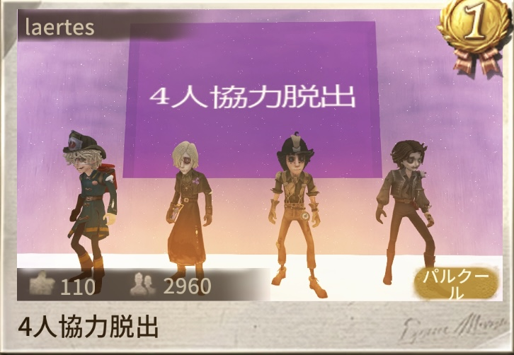
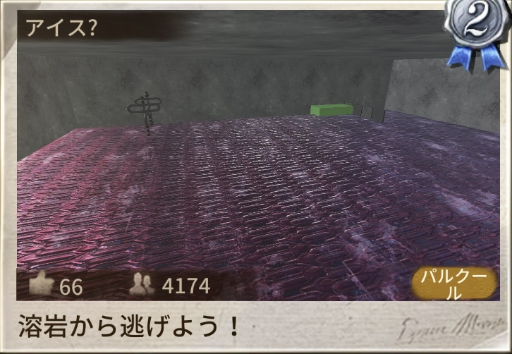
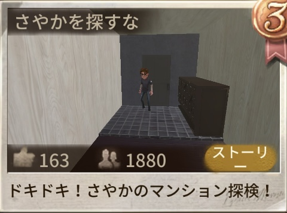
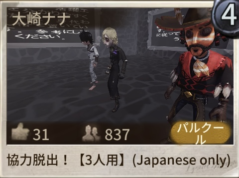
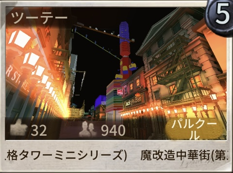

「第五人格」の世界に、新たな創造の可能性が広がる。
「ペン先の空想」は、自分でマップやギミックを作って遊べる創作モード。
今回のアップデートでハロウィンイベントや新アイテム、新モジュールが追加されました。
📑 目次
ペン先の空想にハロウィンテーマのおすすめマップが登場。
【#ハロウィン異聞】トピックのマップをプレイ、またはシェアするとボーナスがもらえます。
※開催期間・受け取り条件の詳細は検証中です。ゲーム内のお知らせをご確認ください。
エリア内にいるキャラの持ち物が生成した創造物の数が条件を満たしているかを検知し、イベントを送信するモジュールです。
たとえば「エリア内に設置物が○個以上置かれたら扉が開く」といったギミックが作れます。
対応キャラ（15体）
※必要ポイント数・ポイントの貯め方は検証中です。
| 項目 | 内容 |
|---|---|
| 視点を固定 | エディターで視点を固定できるように（【その他】画面から設定） |
| 位置を固定 | エディターで位置を固定できるように（【その他】画面から設定） |
| 動作の安定化 | モジュール数や占有値が高いマップでの再接続・タイムアウト・カクつきを改善 |





みんなのコメント